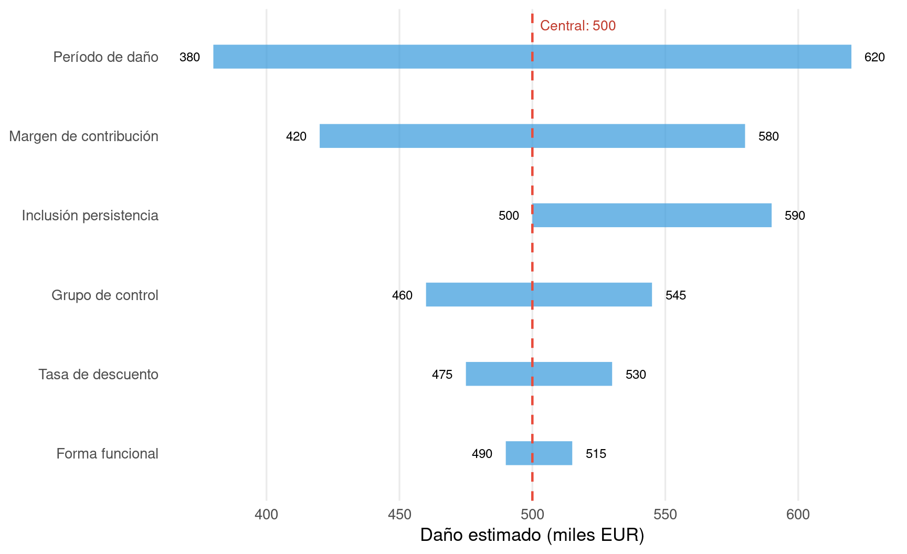

17.1 La sensibilidad como disciplina, no como concesión
A lo largo de los capítulos anteriores, cada método ha incluido su propia sección de análisis de sensibilidad. Este capítulo no repite esos ejercicios, sino que los enmarca en una filosofía general: la sensibilidad no es una debilidad del informe pericial, sino una fortaleza. Un perito que muestra que su resultado se mantiene razonablemente estable bajo supuestos alternativos demuestra que la cuantificación no depende de una decisión arbitraria. Un perito que presenta un único número sin contexto invita a la desconfianza.
17.2 Tres dimensiones de la sensibilidad
En la cuantificación de daños antitrust, la sensibilidad opera sobre tres dimensiones principales:
La sensibilidad a la especificación examina cómo cambia el resultado cuando se modifica el modelo: añadir o eliminar variables de control, cambiar la forma funcional, usar efectos fijos o aleatorios, estimar por OLS o por IV.
La sensibilidad al período evalúa la estabilidad del resultado cuando se acorta o alarga la ventana preinfracción, se modifica la fecha de inicio del daño o se incluye o excluye un período de persistencia.
La sensibilidad a los supuestos económicos comprende la variación de la tasa de descuento, del margen de contribución, del grupo de control o de la tasa de pass-through.
Code
set.seed(1717)# Escenario central y variacionescentral <-500variaciones <-tibble(supuesto =c("Margen de contribución", "Tasa de descuento","Período de daño", "Grupo de control","Forma funcional", "Inclusión persistencia"),bajo =c(420, 475, 380, 460, 490, 500),alto =c(580, 530, 620, 545, 515, 590)) |>mutate(rango = alto - bajo,supuesto =fct_reorder(supuesto, rango) )ggplot(variaciones) +geom_segment(aes(x = bajo, xend = alto, y = supuesto, yend = supuesto),linewidth =8, color ="#3498db", alpha =0.7) +geom_vline(xintercept = central, linetype ="dashed", color ="#e74c3c", linewidth =0.8) +geom_text(aes(x = bajo -5, y = supuesto, label = bajo), hjust =1, size =3.2) +geom_text(aes(x = alto +5, y = supuesto, label = alto), hjust =0, size =3.2) +annotate("text", x = central +3, y =6.4, label =paste0("Central: ", central),color ="#c0392b", size =3.5, hjust =0) +labs(x ="Daño estimado (miles EUR)", y =NULL) +theme_minimal(base_size =13) +theme(panel.grid.minor =element_blank(), panel.grid.major.y =element_blank())

Figure 17.1: Tornado chart: impacto de cada supuesto sobre la cuantificación del daño. Las barras más largas identifican los supuestos más influyentes
La Figure 17.1 es la herramienta de comunicación más eficaz para un tribunal. Permite identificar de un vistazo qué supuestos tienen mayor impacto sobre el resultado y cuáles son prácticamente irrelevantes.
17.3 El análisis de escenarios
Una forma complementaria de presentar la sensibilidad es mediante escenarios: conservador, central y optimista (desde la perspectiva del demandante).
Table 17.1: Análisis de escenarios: conservador, central y optimista
Escenario
Margen (%)
Período daño
Tasa descuento
Daño estimado
Conservador
35%
Solo infracción
2%
380
Central
42%
Infracción + 6 meses
4%
500
Optimista
50%
Infracción + persistencia
6%
650
La Table 17.1 muestra al tribunal un rango de resultados bajo supuestos razonables. El escenario central es la estimación principal del perito; los extremos definen los límites dentro de los cuales se moverá la cuantificación bajo hipótesis plausibles.
17.4 Buenas prácticas
El análisis de sensibilidad debe cumplir tres condiciones para ser útil. Primero, debe ser honesto: el perito no debe limitarse a mostrar las variaciones que confirman su resultado central, sino también las que lo cuestionan. Segundo, debe ser relevante: variar un supuesto que no tiene impacto material es ruido, no información. Tercero, debe ser comprensible: el tribunal necesita ver el resultado, no el proceso.
Un tornado chart, una tabla de escenarios y una frase que diga «el daño se sitúa entre X e Y bajo supuestos razonables, con un valor central de Z» suelen ser suficientes para cumplir estos tres requisitos.
17.5 Errores frecuentes
El error más grave es no hacer análisis de sensibilidad. El segundo es hacerlo de forma selectiva: solo mostrar las variaciones que refuerzan la estimación del perito. El tercero es presentar demasiadas variaciones sin jerarquizarlas: un tribunal no necesita ver 50 escenarios, sino los 5 o 6 que realmente importan. El cuarto es confundir sensibilidad con incertidumbre: que el resultado varíe bajo supuestos alternativos no significa que sea incierto; significa que el perito ha sido transparente sobre las decisiones que ha tomado.
17.6 Lo que un tribunal debe retener
El análisis de sensibilidad responde a la pregunta: ¿cuánto cambiaría el resultado si cambiaran los supuestos? Cuando la respuesta es «poco», la cuantificación es robusta. Cuando la respuesta es «mucho», el tribunal debe saber qué supuestos son determinantes y evaluar su plausibilidad. En ambos casos, la transparencia del perito es mayor que la del que presenta un único número sin contexto.